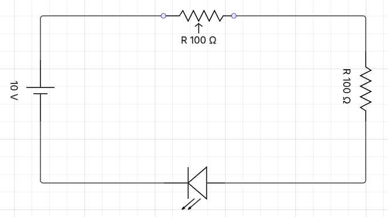
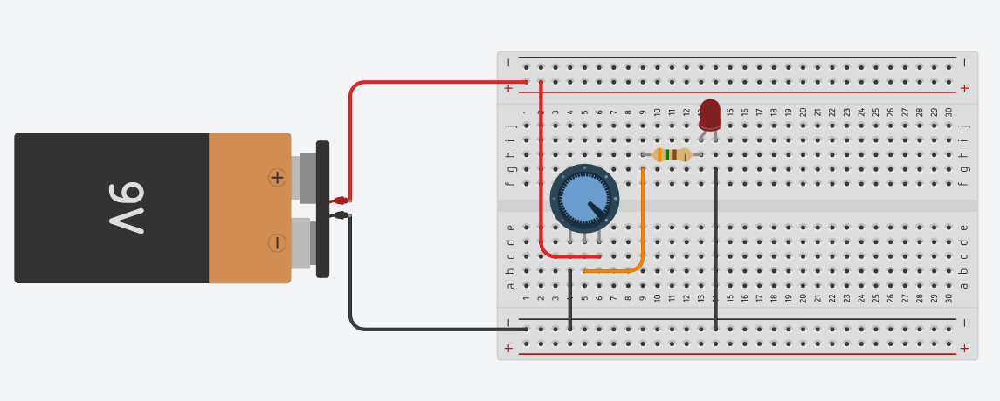
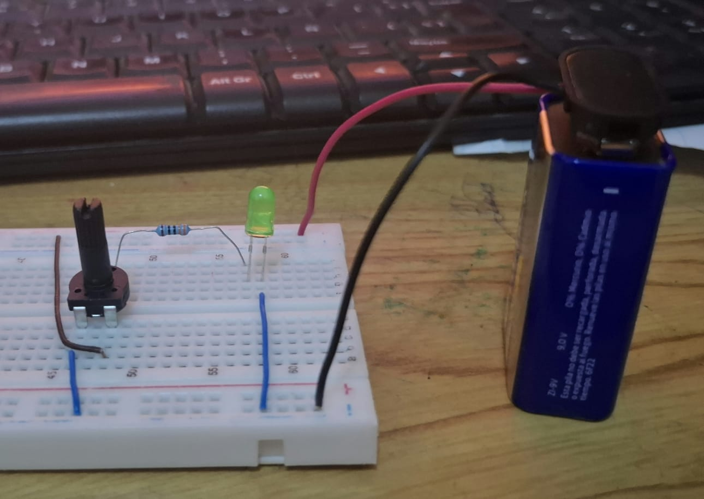

⚡ Diagrama del Circuito

LED controlado por potenciómetro
🎛️ Potenciómetro
Actúa como resistencia variable. Al girarlo cambia la corriente que pasa al LED.
💡 LED
Emite luz según la corriente recibida: más corriente → más brillo, menos corriente → más tenue.
🔌 Resistencia fija
330Ω–470Ω para proteger el LED y evitar que se queme por sobrecorriente.
🔋 Fuente
Batería de 9V que suministra voltaje constante al circuito.
Si aumenta la resistencia (R) → la corriente (I) disminuye → LED más tenue.
Si disminuye la resistencia (R) → la corriente (I) aumenta → LED más brillante.
🔧 Cómo se Elaboró el Circuito
🔋 Materiales
Batería 9V, LED, potenciómetro 10kΩ, resistencia 330Ω–470Ω, cables y protoboard.
🎛️ Patas del potenciómetro
Izquierda = extremo 1 · Centro = cursor (salida variable) · Derecha = extremo 2.
✨ Girar a un lado
Más corriente → LED más brillante.
🌙 Girar al otro lado
Menos corriente → LED más tenue.
🔌 Conexión eléctrica paso a paso
- 🔋 Batería (+) → una pata lateral del potenciómetro.
- Pata central del potenciómetro → resistencia (330Ω).
- Resistencia → ánodo del LED (pata larga).
- 🔋 Batería (−) → cátodo del LED (pata corta).
✅ ¿Por qué usar resistencia fija?
- Protege el LED de sobrecorriente.
- Si el potenciómetro está en mínimo, la resistencia fija limita la corriente.
- El LED soporta normalmente solo unos 20 mA.
⚠️ Sin resistencia fija
- Si el potenciómetro está en valor mínimo, la corriente aumenta demasiado.
- El LED puede quemarse permanentemente.
- Siempre usa al menos 330Ω en serie con el LED.
💻 Simulación en Tinkercad

Simulación virtual del circuito con potenciómetro
▶️ Al iniciar simulación
La batería suministra voltaje. El programa ejecuta setup() y luego loop() continuamente.
🎛️ Al girar el potenciómetro
Cambia la resistencia interna → cambia la corriente → el LED brilla más o menos.
💡 Dentro del LED
Los electrones atraviesan el semiconductor. Más corriente = más luz. Menos corriente = menos luz.
⚠️ Sin resistencia fija
Tinkercad muestra que el LED se quema si la resistencia es mínima y la corriente sube demasiado.
📊 Lo que muestra la simulación
- Movimiento de corriente en el circuito.
- Cambio en intensidad luminosa del LED según el potenciómetro.
- Posible sobrecorriente si no hay resistencia protectora.
- Variación en valores eléctricos con instrumentos virtuales.
📷 Foto Final de la Práctica

Resultado final del circuito armado